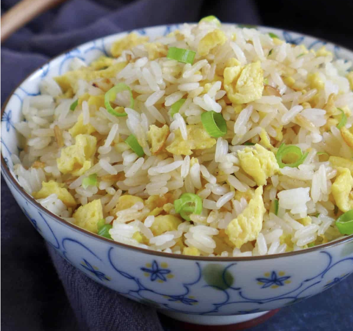

Egg Fried Rice

The Recipe
Chinese egg fried rice is an easy stir fry that anyone can make. But to
make it light, fluffy and tasty, you need to follow some traditional tips
and tricks.
Ingredients
- White rice, cooked and chilled
- Eggs, lightly beaten
- Scallions & garlic, finely chopped
- Light soy sauce
- Sesame oil
- Salt & white pepper
- Neutral cooking oil (olive oil isn’t suitable)
Steps
-
Lightly beat the eggs until the white and yolk are well incorporated.
Heat up an empty wok until it smokes. Pour in oil then add the beaten
egg. You’ll see it quickly bubble up from the edge. Push it around to
cook thoroughly then break the scrambled egg into small pieces. Dish out
and set aside.
-
Put the wok back on the burner to reheat. Add a little oil and fry
minced garlic until it browns a little. Stir in the rice. Flip and toss
constantly to heat the rice evenly. If there are still some clumps,
press with a spatula to separate the rice grains.
-
Once the rice becomes piping hot, put in the scrambled egg and
scallions. Add soy sauce, sesame oil, salt and white pepper. Give
everything a good stir to evenly distribute the seasonings. Before
dishing out, taste some to see if you need more salt.